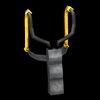
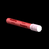

Following is a list of all collectables and items that can be used in classrooms:
 Flashlight
Flashlight
Jake’s rechargeable flashlight is available from the start of the
game and does not need to be collected to be used. The flashlight can be used to
cast light anywhere in the rooms as a way to reveal light sources and collectable
items. Since Jake holds the flashlight in front of him, it cannot be used to create
beams for Jake to walk across. The flashlight runs out of electricity after a few
seconds of use, but can be recharged by shaking the flashlight lengthwise for 2
seconds.
Slingshot
The slingshot can be used to break windows or distant light objects.
Although the slingshot is available from the start of the game, slingshot pellets
must be collected through the game in order to use this item. Collected pellets are
only useable in the room they were found.
 Slingshot Pellet Box
Slingshot Pellet Box
Each slingshot pellet box that is collected adds one
slingshot pellet to the player’s inventory.
 Cherry Bomb
Cherry Bomb
The cherry bomb can be thrown anywhere in the room. Upon impact,
it creates a flash of light and destroys any objects in the immediate area. In later
levels, breakable objects will be placed near windows. In order to break the window
without breaking the object, the player must throw the cherry bomb off to the other
side of the window.
 TV Remote
TV Remote
The television remote control operates all televisions in the room.
When the player has this item equipped, pressing the A Button will cycle through the
available television sets, as well as turn all televisions off once per cycle. A
destroyed television cannot be turned on.
Flare
The flare can be dropped in front of Jake to create a small area of
light that bridges other light sources. The flare is used by pressing the A Button and
swiping the Wii Remote horizontally. Once a flare is dropped it cannot be collected or
used again. A flare will burn for a short while, then fade out and vanish.